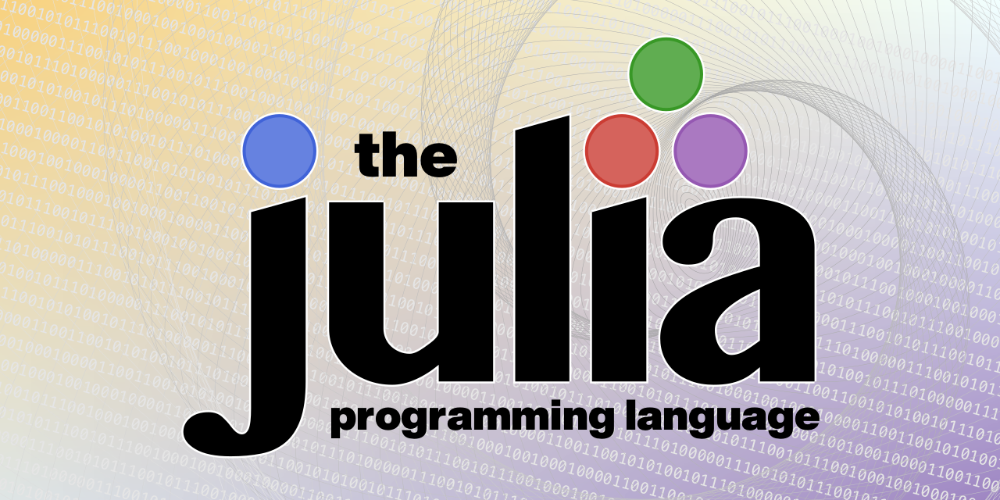
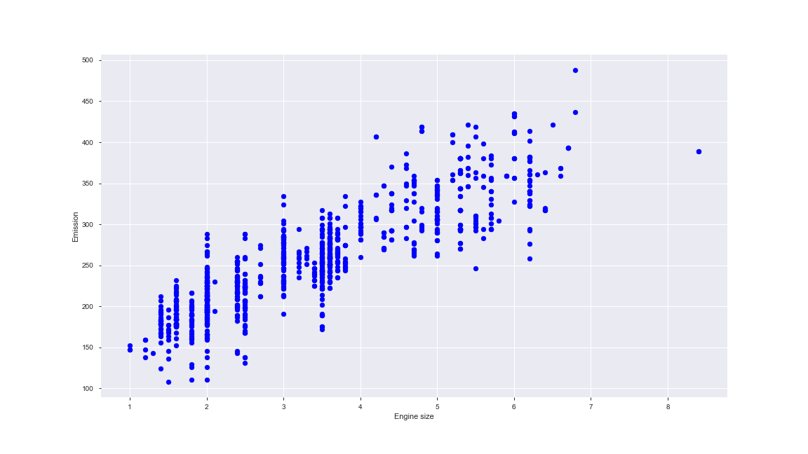
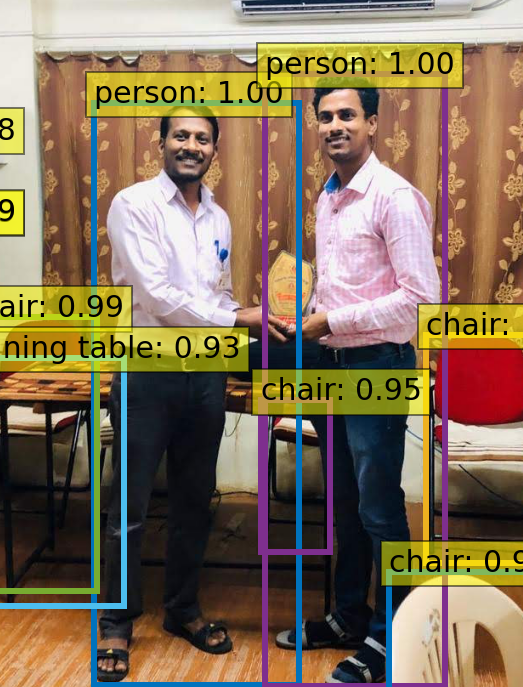
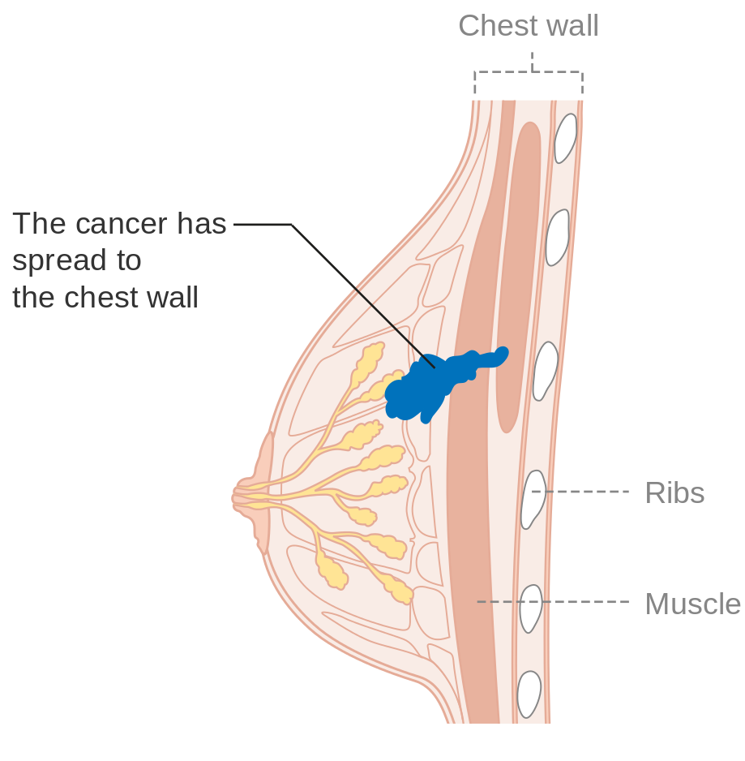
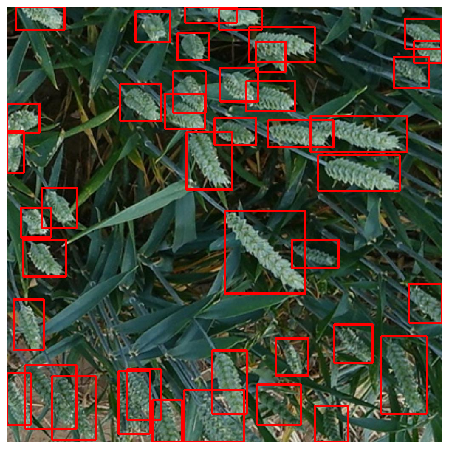
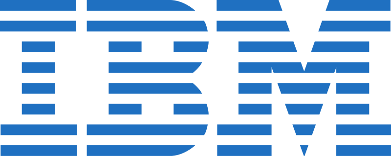

Reddy Prasad
Machine Learning Researcher
Bengaluru, Karnataka, India
reddyprasade@gmail.com
+91-9666302750
Languages
Python
100%
Julia
90%
R
100%
Skills
Tensorflow
90%
Numpy
100%
Pandas
98%
Scikit-Learn
95%
Opencv-Python
80%
Qiskit
100%
Pandas Profiling
100%
Flask
50%
Django
50%
Interactive Computing
Jupyter Notebook & lab,Microsoft Azure Notebook
100%
Colab (GPU & TPU)
100%
NVIDA GPU
100%
Binder
100%
Data Visulization
Matplotlib
100%
Seaborn
80%
ggplot2
80%
Plotly Dash
80%
Pandas Visualization
70%
Plots.jl
60%
GadFly.jl
70%
Other Tools
Github
100%
Weaka-3.9.4
70%
Knime Anylytics Platform
80%
SQL
80%
LaTeX (for document writing)
80%
Zeppelin
80%
RStudio
80%
Contributions
KEY COMPETENCIES AND STRENGTHS
Highly accurate Data Scientist adept at collecting, analyzing, and interpreting large datasets, developing new forecasting models, and performing data management tasks.Possessing extensive analytical skills, strong attention to detail, and a significant ability to work in team environments.
KEY COMPETENCIES AND STRENGTHS
Highly accurate Data Scientist adept at collecting, analyzing, and interpreting large datasets, developing new forecasting models, and performing data management tasks.
- Over 4+ years research and IT Industy experience in Machine Learning and Data Mining field.
- Strong data analytical and programming skills especially with Python, R and Julia.
- Strong team-work spirit with experience of working in highly international environments for years.
- ML engineering and applied research management experience in building high-throughput online recommendation/personalization systems.
- Highly accurate Data Scientist adept at collecting, analyzing, and interpreting large datasets, developing new forecasting models, and performing data management tasks.
- Possessing extensive analytical skills, strong attention to detail, and a significant ability to work in team environments.
- He worked with machine learning, data mining, and process mining methods, for analysing multi-variate and time series data collected from user's interactions.
- He also has experience as a data science consultant for varied industries such as banking and reinsurance where she helped clients make better decisions and improve their businesses.
- As a data scientist, he has deep knowledge in state-of-the-art machine learning techniques, discovering consumer trend patterns and design of new ML techniques.
- I joined the ClientoClarify company as a CTO and Co-led its AI lab to optimize the Machine Learning Model experience through machine learning. Since its inception, the team grew to over 20 members
- Build a Machine Learning Models from past 4+ years of experience developing and deploying Machine Learning Model into Pipelines as per Client deliverable Products.
- I have work in an open environment to work on the most complex problems in Machine learning, Artificial Neural Networks, Deep learning, HCI, Computer vision speech, etc.
- Perform statistical analysis Fine-tuning test results Train and retrain systems Work on frameworks Undertaking machine learning experiments and test Designing machine learning programs Developing deep learning systems to various use cases based on the business needs and Finally implementing suitable AI/ML algorithms. Completed a prototype for time-series data aggregation
- Completed a prototype for time-series data aggregation microservice with Python, Flask, and Knime Analytics Platform
- Lead on the team in commits (612 – 12%), lines of code (11070 – 24%), and code reviews
- Quantified and visualized scaling and reliability characteristics of beta release with AutoSkLearn and OpenSource
- Collaboration project with CNH Industrial to build a computer vision system based on structured prediction to guide autonomous agricultural vehicles.
- We have a Freedom to access the high-level infra to run complicated tests, i have to work on multiple deep learning frameworks - Tensorflow, Pytorch, OpenCV, etc.
- Develop technical aspects of the company’s strategy to ensure alignment with its business goals
- Discover and implement new technologies that yield a competitive advantage
- Help departments use technology profitably
- Supervise system infrastructure to ensure functionality and efficiency
- Build quality assurance and data protection processes
- Monitor KPIs and IT budgets to assess technological performance
- Use stakeholders’ feedback to inform necessary improvements and adjustments to technology
- Communicate technology strategy to partners and investors
- I am worked as a Technology Enabler in Machine Learning and Algorithm, I work Project for Chatbot and Analysis for Client Reporting Queries and make the machine to Learn form the data.
- Performed Data Profiling to learn about user behaviour and merged data from multiple data sources.
- Participated in all phases of data mining; data collection, data cleaning, developing models, validation, visualization and performed Gap analysis.
- Performed K-means clustering, Multivariate analysis and Support Vector Machines in Python and R.
- Developed Clustering algorithms and Support Vector Machines that improved Customer segmentation and Market Expansion.
- Data Story teller, Mining Data from different Data Source such as SQL Server, Oracle, Cube Database, Web Analytics, Business Object and hadoop.
- Developed analytics and strategy to integrate B2B analytics in outbound calling operations. Implemented analytics delivery on cloud-based visualization using shiny tool for Business Object and Google analytics platform.Data and predictive analyst to create annual and quarterly Business forecast reports.Main source of Business Regression report.
- Working in a machine learning pipeline with devops management (MLOPS) which will provide complete stages from development to deployment in one single click.
- Developed a virtual AI chatbot for french customer which will understand and reply in French and English language.
- Working on long-term projects as an NLP specialist and Chatbot Developer.
- Research on intent detection and named entity recognition approaches for an HR chatbot (Python, LUIS, padatious)
- Developed an English-speaking automated voice attendant chatbot (DialogFlow)
- Worked on the annotation project for Aspect-Based Sentiment Analysis task (Prodigy)
- Chatbot consultant for a healthcare chatbot (DialogFlow)
- Building a language learning chatbot assistant (Rasa)
- I have to Work Close with PhD Project under Computer Society of India and we should have Good Experience in Natural Language Understanding, Computer Vision, Machine Learning, Algorithmic Foundations of Optimization, Data Mining or Machine Intelligence (Artificial Intelligence).
- I am Contributions to research communities/efforts, including publishing papers in machine learning (JMLR, ICLR, NeurIPS, ICML, ACL, CVPR,IEEE).
- I should have Relevant work experience in full time industry experience with CilentoClarify BrainTeam
- I should have Relevant work experience in different data set (Structer)
- I have Maintain the Records of evey experiments what we done So for to work with datasets, such as statistical software, statistical methods such as linear models, multivariate analysis, stochastic processes, and sampling methods.
- I have deal with different data set such as Structured data, UnStructured data, Semi-Structured data
- I am Working with Different Open Source Project such as Keras,OpenMined,Tensorflow
- I am Working as Part Time For Machine Learning Professorship Freiburg For AutoSkLearn
- Total Commits in github 1.2k @ 2020
- Contributions towards to github with 13 different Project and Packages
- Contributions to IBM Skills Network Labs
WORK EXPERIENCE
Machine Learing Researcher
June 2019 - Current
Roles and Responsibilities as Machine learning Researcher
Roles and Responsibilities As a CTO
Roles and Responsibilities As a CTO
Technology Enabler Machine Learning Algorithm
Mar 2018 - May 2019
Roles and Responsibilities as Machine learning Algorithm
Researcher Assistant
Jan 2017 - Jan 2018
Work as Researcher Assistant in Bit Institute of Technology Carry out experiments and research according to protocols laid out by primary researchers Collect and log experimental data,Conduct statistical analyses of data sets,Prepare graphs and spreadsheets to portray results Create presentation slides and posters to help researchers present findings,Review print and online resources to gather information,Check facts, proofread, and edit research documents to ensure accuracy, Maintain laboratory equipment and inventory
Roles and Responsibilities as Researcher Assistant
Contributions as OpenSource
Aug-2016 - Part Time
Portfolio

Predication of Co2

Predication of Co2
Predication of Hand Sin

Object Detection with DETR Model

Predication of Cancer

Predication of Wheat

Emotion Detection
Researcher Work
Education
Sri Venkateswara College Of Engineering & Technology(Autonomous)
2014-2016
Mastre Of Technology in Computer Science Specialized in Data Mining,Machine Learning,Natural Language Processing,Deep Learning
Sri Venkatesa Perumal College of Engineering (SVPP)
2010 - 2014
Bachelor Of Technology in Information Technology
Achievements & Cources
Machine Learning and Deep learning
